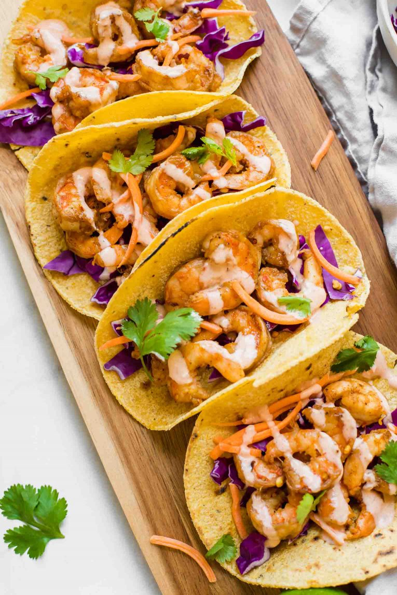

Sriracha Lime Shrimp Tacos

My favorite taco recipe!
Need an easy, healthy recipe for dinner tonight? These Sriracha Lime Shrimp Tacos are SO flavorful, gluten free, and loaded with nutrition.
Make them in about 20 minutes or less for a delicious meal the entire family will love!
Ingredients
- Cooked shrimp – We used medium-sized cooked shrimp (fully thawed and drained) in this recipe. If you’re using uncooked shrimp,
be sure to add a little extra time for cooking before moving on to the next step!
- Seasoning – We kept it simple by using chili powder, crushed red pepper, salt, and pepper.
- Soy sauce – Making the gluten free version of this recipe? Simply swap out the soy sauce for Tamari!
- Veggies – We added shredded red cabbage, shredded carrots, and fresh cilantro to each taco. So yummy!
- Lime – A squeeze of fresh lime juice over each taco takes this recipe to the next level!
- Sriracha sauce – Sriracha, plain greek yogurt, salt, and pepper. This creamy sauce has a spicy kick that tastes amazing!
Feel free to adjust the level of spicy in these shrimp tacos by adjusting the amount of crushed red pepper and sriracha!
Directions
- Cook the shrimp with the oil, seasoning, and soy sauce.
- Mix the sriracha, yogurt, and salt/pepper together to create the sauce.
- 3. Fill each tortilla with shredded red cabbage, carrots, cilantro, cooked shrimp, a drizzle of the sriracha sauce, and a squeeze of fresh lime juice!
TIP:Take your tacos to the next level by lightly toasting the corn tortillas in the skillet before cooking the shrimp!